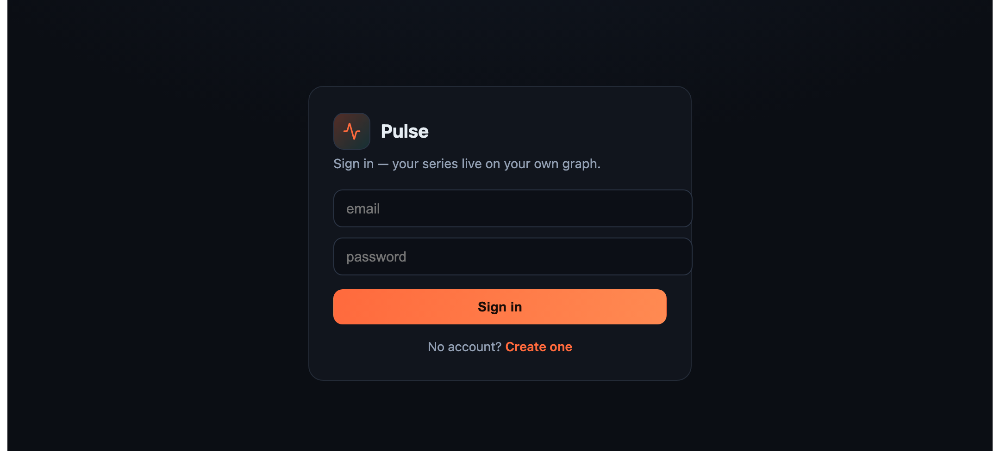
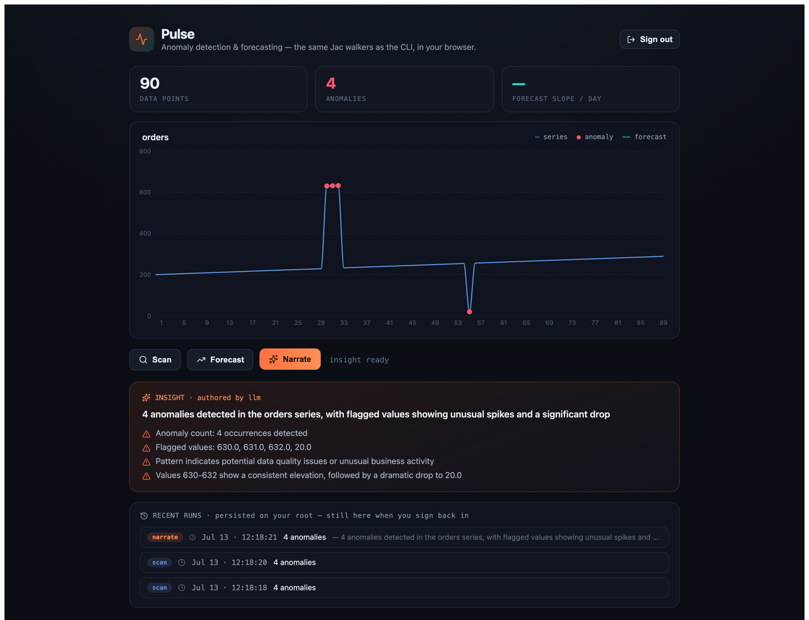
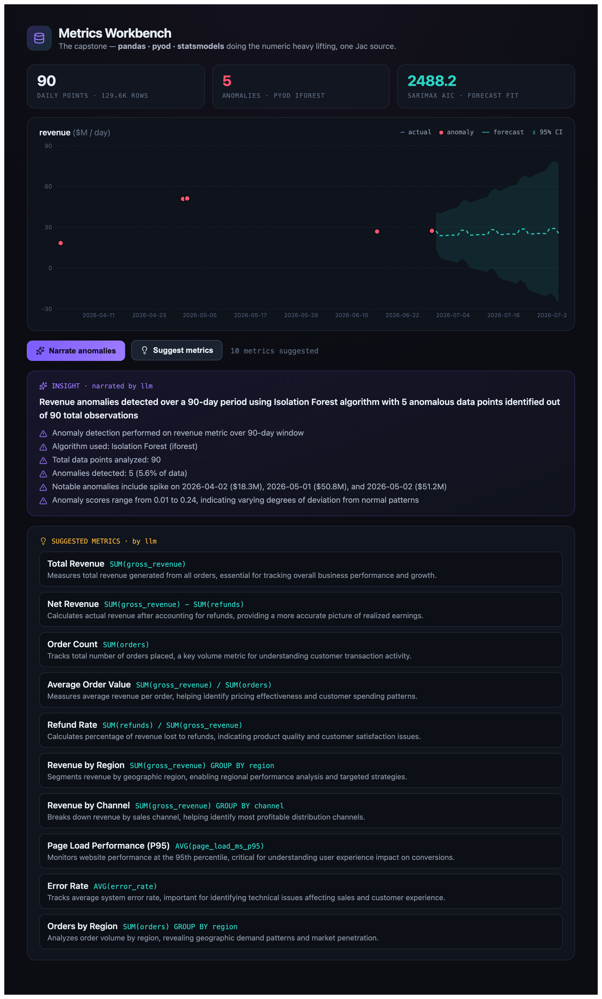

Most frameworks make you pick a lane and marry it. In this workshop you write one small Jac program — Pulse — then walk it down the whole menu. The diff to each target is a flag or a file, not a rewrite.
A tiny metric-anomaly narrator. Feed it a series, find the outliers, and let an LLM explain them. The whole core is ~155 lines of Jac. Its data model is a graph that hangs off your root — so it persists, per-user, with no database code.
A walker is Pulse's unit of API. The same walker is a CLI subcommand, a REST endpoint, and a call from the frontend — you write it once. Here's the anomaly scan: a z-score, in plain Jac.
# the graph model — anything hung off root auto-persists, per user node Series { has name: str; has points: list[float] = []; } node Run { has anomalies: list[int] = []; has values: list[float] = []; } node Insight { has summary: str = ""; has bullets: list[str] = []; } # AI as a typed function — the signature IS the prompt, no template strings def write_insight(name: str, count: int, flagged: list[float]) -> InsightText by llm(); # one walker = CLI subcommand + REST endpoint + frontend RPC walker:pub scan { has series: str; has threshold: float = 2.5; can run with Root entry { s = [-->][?:Series, name == self.series][0]; vals = s.points; m = sum(vals) / len(vals); std = (sum([(v - m) ** 2 for v in vals]) / len(vals)) ** 0.5; idx = [i for (i, v) in enumerate(vals) if abs((v - m) / std) > self.threshold]; run = Run(anomalies=idx, values=[vals[i] for i in idx]); s ++> run; report {"anomalies": len(idx), "indices": idx}; } }
No ORM. No route decorators. No request parsing. The walker's has fields are the request body; its report is the response.
No argument parser to write: jac enter <file> <walker> <args…> invokes any walker. The graph persists between calls — seed once, scan later — because it lives on root. This is the actual output, captured live:
$ jac enter main.jac seed {'name': 'orders', 'points': 90} $ jac enter main.jac scan orders {'run': 'e3897860…', 'anomalies': 4, 'indices': [30, 31, 32, 55]} $ jac enter main.jac forecast orders 14 {'slope': 0.693, 'intercept': 224.4, 'forecast': [286.7, 287.4, 288.1, 288.8, 289.5, …]}
The z-score flagged indices [30, 31, 32, 55] — exactly the anomalies seeded into the series: a 3-day spike (30–32) and a 1-day dip (55). Here's what that looks like:
Jac can do real work by itself — that z-score was pure Jac. And when a library helps, you import it directly into the same .jac file and call it inline. One import, no service, no wrapper, no glue. Both of these live side by side in Pulse:
# mean / std / z-score, # written in Jac itself m = sum(vals) / len(vals); std = (sum([(v-m)**2 …]))**0.5; z = abs((v - m) / std);
import from statistics { linear_regression } # used in the same file fit = linear_regression(x, y); slope = fit.slope;
The narrate walker hands the run's numbers to write_insight … by llm(). No prompt template, no JSON re-parsing: inputs and the returned Insight are Jac types. This is a real response (Claude Haiku 4.5), captured from the running app:
$ jac enter main.jac narrate orders
Before the frontend, one question: whose data is this? Every node Pulse hangs off root — every Series, Run, Insight — is persisted automatically. There is no CREATE TABLE, no migration, no ORM: the graph is the store, backed by SQLite. Auth is the second half of the same idea — each user gets their own root, so the very same walker reads and writes a different, private slice of that persistent graph per person.
That's the whole change. A :pub walker runs on one shared guest graph; drop the :pub and the walker now demands a JWT and runs on the caller's root. No user_id column, no WHERE owner = ? — identity is the root you're standing on.
# BEFORE — one shared graph. Everyone saw the same Series. walker:pub dashboard { ... } # AFTER — drop :pub. JWT required; every call runs on the CALLER's own root. # (:protect = auth + own root, and still importable by the .cl.jac web client; # only :pub ever skips auth — it's the one visibility that does.) walker:protect dashboard { ... } # same body, unchanged
On the client it's a login gate in front of the same dashboard — three helpers from @jac/runtime, no token plumbing:
# web.cl.jac — the gate. jacIsLoggedIn() decides; jacLogin() gets you a root. import from "@jac/runtime" { jacLogin, jacSignup, jacIsLoggedIn } if not authed { # authed = jacIsLoggedIn() at mount return <LoginCard />; # email + password → jacLogin → your own root } # ...authenticated: boot() calls `root spawn dashboard()` — now YOUR root.

Verified with two accounts: sign in as one user, seed a series, sign in as another — the graphs never cross. Each login returns a distinct root_id, and a walker call with no token is rejected 401. Same walkers, same file, one keyword — the DB and the auth layer are the graph.
Add one .cl.jac page — a component compiled to React — that sv imports the walkers and calls them with root spawn. No fetch, no CORS, no request schema retyped as TypeScript. UI state lives in reactive has fields, and the JS ecosystem is one import away too — the chart is recharts and the icons lucide-react, npm packages pulled straight into the .cl.jac. One command builds the client and serves the API together:
$ jac start --dev main.jac Gateway starting on http://localhost:8000 ✔ Initial client compilation completed

Click Narrate and the browser calls the narrate walker over HTTP → Claude writes a typed Insight → the card renders it. Exactly the same code path as jac enter main.jac narrate orders — one walker, two front doors.
No new app code. Each of these is a build flag over the exact same main.jac / api.jac. Real build output below.
# installable, offline, no native deps $ jac build --client pwa main.jac ✔ Generated manifest.json ✔ Generated sw.js (service worker) ✔ Added PWA install banner ✅ PWA build complete!
# ship the core to others $ jac bundle ✔ pulse-0.1.0-py3-none-any.whl $ pip install pulse-0.1.0-*.whl $ python -c "import pulse" # ✓ works
$ jac build --client desktop main.jac ✔ Client bundle built Native window host: WKWebView (macOS) / WebKitGTK (Linux) — no Electron, no Rust
One flag wraps the same UI in a native OS window. The client bundle builds everywhere; the native window host is compiled by a C toolchain (on this build the packaged webview binding links against WebKitGTK, so the host builds on Linux).
Here's the scoreboard. The core never changes — each target is a thin shell around it.
| Target | The diff | Why it lands |
|---|---|---|
| CLI + native binary | + 0 lines | jac enter · jac nacompile → a binary with no Python runtime |
| Backend REST API | already there | every walker is already an endpoint — has fields in, report out, no route glue |
| Auth + per-user DB | drop :pub | graph auto-persists (SQLite); each user gets their own root — JWT, no ORM, no user_id columns |
| Full-stack web app | + 1 file | a .cl.jac page calling scan via root() spawn — no CORS, no fetch |
| Desktop / mobile | + 1 flag | --client desktop — OS webview, no Electron |
| AI agent | walkers = tools | an LLM drives your walkers; the app is the toolset |
| Reusable package | config | jac bundle / wheel — ship the core to others |
Six targets off the menu. One core. No rewrites — and when you need the heavy Python ecosystem (pandas, statsmodels), the capstone scales the same patterns.
The other half of the interop story: a full analytics app where pandas, statsmodels and pyod do the heavy lifting — anomaly detection, a SARIMAX forecast with a 95% confidence band, an LLM-authored insight, and LLM-suggested metrics. Same graph, same walkers, heavier engine.
